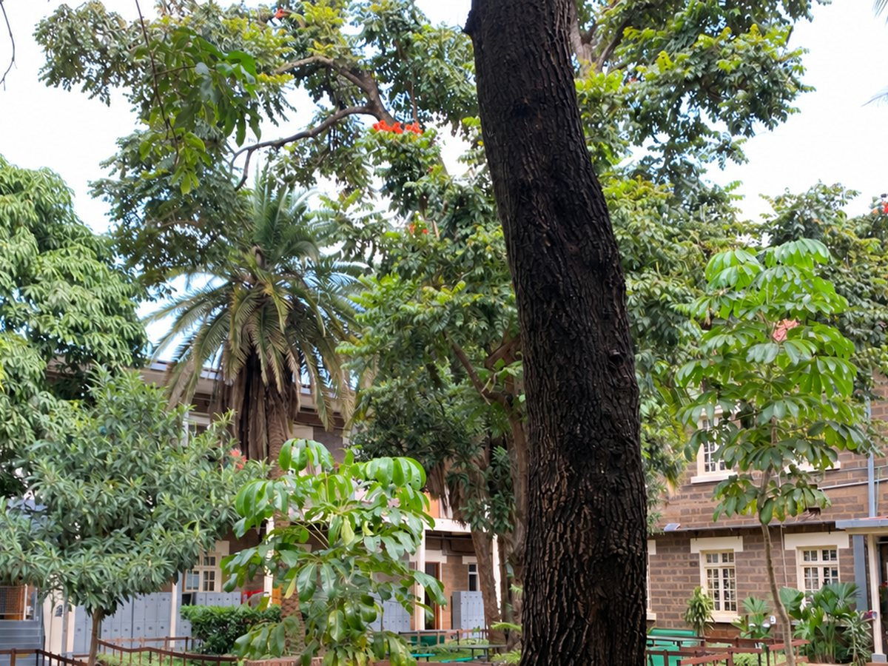

Plastic Pollution
Plastic bottles, food wrappers and packaging can build up in the environment and harm animals.
Learn More about plastic pollutionPollution affects the air we breathe, the water we use and the places where we live. This website helps students understand different types of pollution and discover simple actions they can take to protect the environment.

Plastic bottles, food wrappers and packaging can build up in the environment and harm animals.
Learn More about plastic pollutionSmoke and harmful gases from vehicles, factories and burning waste can affect the air we breathe.
Learn More about air pollutionWaste, chemicals and other harmful substances can enter rivers, lakes and oceans.
Learn More about water pollutionLitter and incorrect waste disposal can damage soil, habitats and shared environments.
Learn More about land pollutionEvery school day is full of small choices. One choice may seem too small to matter, but hundreds of students making the same choice every day adds up quickly.